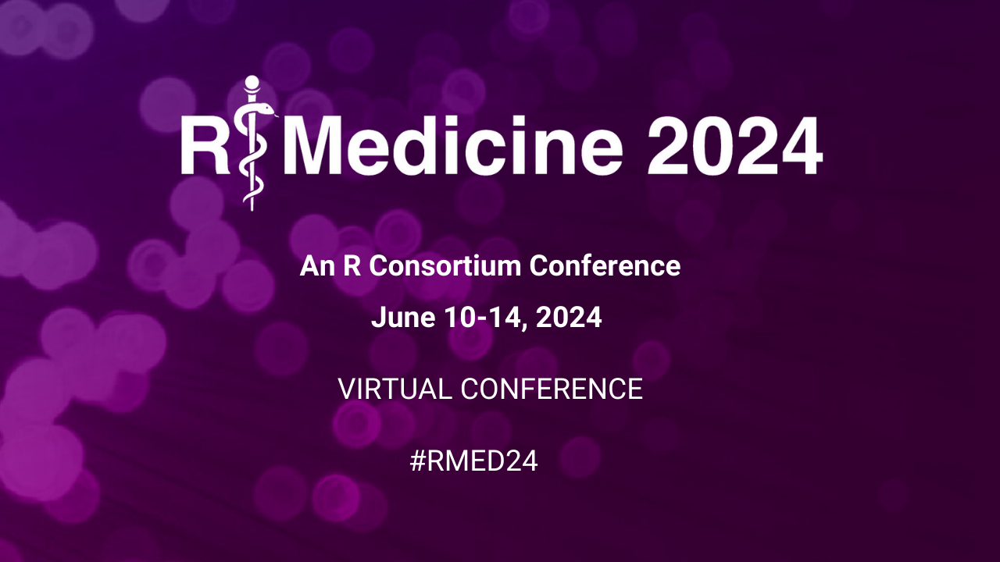

R/Medicine 2024

AN R CONSORTIUM VIRTUAL CONFERENCE
WHY ATTEND
The R/Medicine conference provides a forum for sharing R based tools and approaches used to analyze and gain insights from health data. Conference workshops provide a way to learn and develop your R skills. Midweek demos allow you to try out new R packages and tools, and our hackathon provides an opportunity to learn how to develop new R tools. The conference talks share new packages, and successes in analyzing health, laboratory, and clinical data with R and Shiny with a vigorous ongoing discussion with speakers (with pre-recorded talks) in the chat.
Keynote Addresses
Stephanie Hicks
Statistical Challenges in Single-Cell and Spatial Transcriptomics
Thursday, June 13
Abstract
Single-cell RNA-Seq (scRNA-seq) is the most widely used high-throughput technology to measure genome-wide gene expression at the single-cell level. However, single-cell data present unique challenges that have required the development of specialized methods and software infrastructure to successfully derive biological insights. Compared to bulk RNA-seq, there is an increased scale of the number of observations (or cells) that are measured and there is increased sparsity of the data, or fraction of observed zeros. Furthermore, as single-cell technologies mature, the increasing complexity and volume of data require fundamental changes in data access, management, and infrastructure alongside specialized methods to facilitate scalable analyses. I will discuss some challenges in the analysis of scRNA-seq and spatially-resolved transcriptomics data and present some solutions that we have made towards addressing these challenges.
Biography
Dr. Stephanie Hicks is an Associate Professor in the Department of Biomedical Engineering and Biostatistics at Johns Hopkins University where she has affiliations with the Malone Center for Engineering in Healthcare, Center for Computational Biology, the Department of Genetic Medicine, and the Department of Biochemistry and Molecular Biology. She is an expert in developing scalable computational methods and open-source software for biomedical data analysis, in particular single-cell and spatial transcriptomics genomics data, leading to an improved understanding of human health and disease. She serves on a variety of boards including the Bioconductor Technical Advisory Board, and the Editorial Board at Genome Biology and the Journal of American Statistical Association. Locally, she co-founded and co-organizes the R-Ladies Baltimore chapter to promote gender diversity in the R programming language community. She is a recipient of several professional awards including a K99/R00 Pathway to Independence Award, a High-Impact Project Award from the Bloomberg American Health Initiative, Teaching in the Health Sciences Young Investigator Award from the American Statistical Association (ASA), Harvard University’s Myrto Lefkopoulou Award for excellence in Biostatistics, and the COPSS Emerging Leader Award from the ASA, arguably the statistical profession’s most prestigious award for early career leaders in Statistics and Data Science.Gundula Bosch
Reproducibility in Biomedical Research Education
Friday, June 14
Abstract
Our approach to building graduate and post—graduate level research capacity in living the 3R’s of good science, Rigor, Reproducibility, and Responsibility, starts in the classroom and extends throughout laboratory practice. The central idea behind our “R3” program is to implement elements of the humanities, particularly philosophy and communication science, in the research and mentoring experiences we create for our learners. This concept stems from the realization that the first principles of science can be formally taught, by relying not on rote-learning of subject matter, but rather emphasizing critically-integrative thinking and translation across disciplines. To that end, we are teaching a research-reality applied form of epistemology, logic , ethics, methods, and scientific communication.
This presentation will focus on a particular aspect of our program, namely the integration of R3 education, specifically reproducibility, into statistical reasoning training for the life-sciences, from the laboratory to basic data science applications. The R3 program accompanies trainees in biomedicine throughout their graduate and post-graduate, continuing education: We begin with communications-embedded, fundamental skills in biostatistical logic; continue with techniques to make biomedical data ready for AI and ML applications and collaborations; and provide skills how to make sense of big data in biomedicine, particularly for science practitioners with limited experience on the data science field.
This talk will illustrate our educational practice by reflecting on successes and challenges, and providing ideas for enhancing networks and partnerships in the global graduate science education landscape.
Biography
Gundula Bosch, PhD, MEd ’16, MS, is a scientist and educator leading global education reform through training programs in critical, broad, and interdisciplinary scientific thinking. She is the director of the R3 Center for Innovation and Science Education at the Johns Hopkins School of Public Health.
As an interdisciplinary scientist with joint appointments at the Johns Hopkins Schools of Public Health and Education, Dr. Bosch’s research focus lies in implementation science and the development of valid metrics to assess outcomes and impact of interventions in graduate science and health education, nationally and globally. In her function as the Director of the R3 Center for Innovation in Science Education (R3ISE) at the Johns Hopkins Bloomberg School of Public Health, Dr. Bosch developed and leads the R3 Graduate Science Programs (PMID: 29259084; PMID: 29446388) that stand for “the three R’s” of good scientific practice: Rigor in research conduct, Reproducibility of results, and Responsibility of scientists to society. Originally from Munich, Germany, she holds a Ph.D. in Biology from the Max-Planck-Institute of Biochemistry and a master’s degree in Education from Johns Hopkins.Under Dr. Bosch’s leadership, the R3ISE team offers graduate-level programs that bring formal training in critical thinking, quantitative reasoning, sound research methodology, interdisciplinary collaboration, ethical decision-making, responsible communication, and social justice into graduate student training in biomedicine, public health, engineering, and technology (PMID: 35570294; PMID: 37289659). Through the global R3ISEnetwork of scientist-educators, these training experiences are available to all graduate and post-graduate trainees at Johns Hopkins, as well as national and international partner institutions.
BROUGHT TO YOU BY

SPONSORED BY
Silver Sponsors
MAILING LIST
Join our mailing list to hear all the latest about events, news and more
HELP EDIT THIS WEBSITE
This entire website was made using Quarto and R.
If you notice any problems or have any additions please submit a Pull Request to our public GitHub Repo